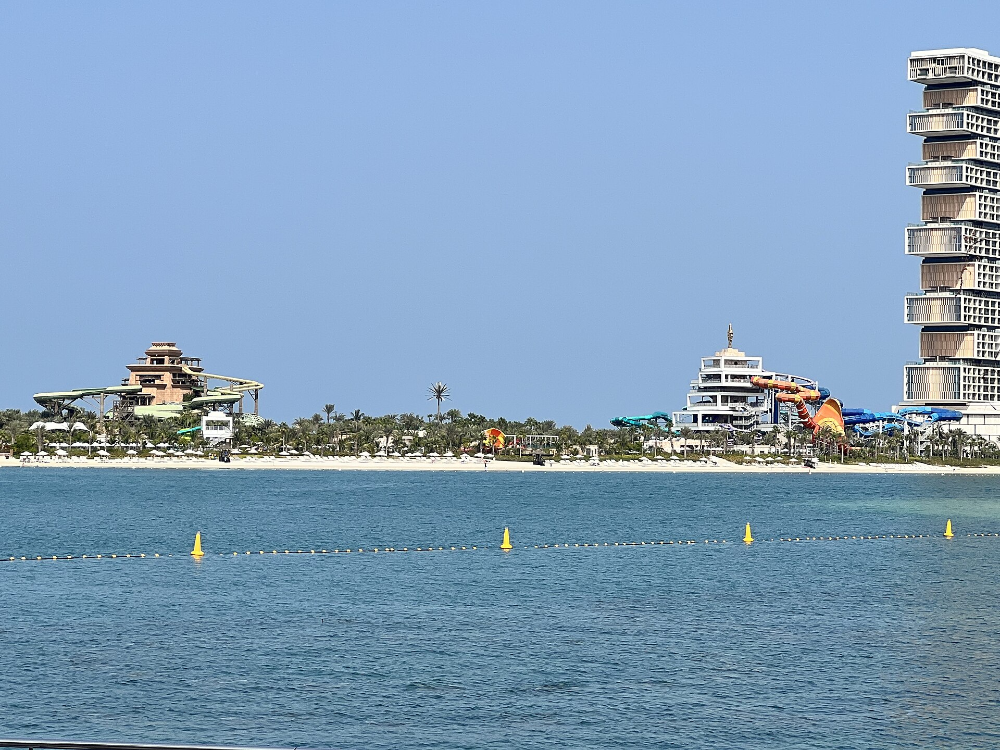
01
Aquaventure World
Dubai, UAE
Often called the world’s largest water park, with 105+ slides and experiences. The Leap of Faith drops through a clear tunnel in a shark lagoon — thrilling and unforgettable.
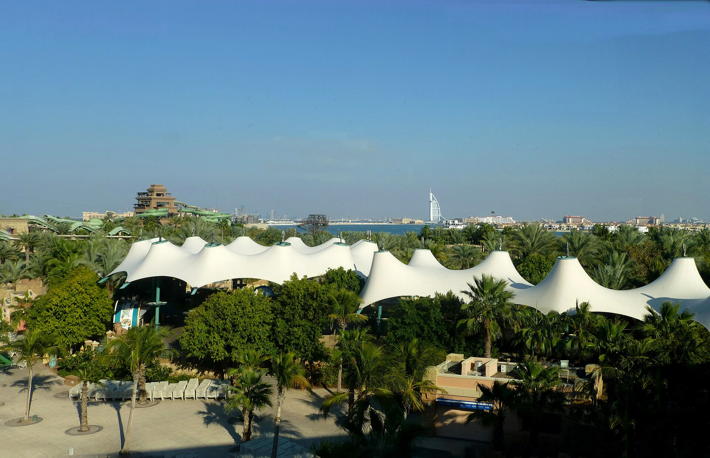
Ten destinations chosen for scale, beauty, and that rare holiday feeling — sun, splash, and pure delight.
BeginA gentle ranking
From Dubai’s turquoise towers to Tenerife’s gardens — a quiet guide to the parks worth crossing oceans for.

01
Dubai, UAE
Often called the world’s largest water park, with 105+ slides and experiences. The Leap of Faith drops through a clear tunnel in a shark lagoon — thrilling and unforgettable.
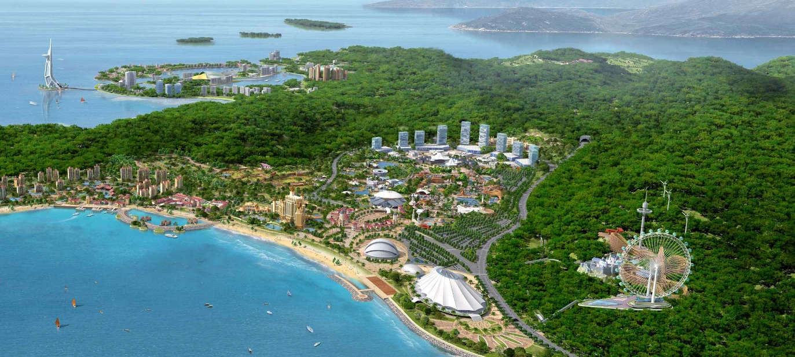
02
Guangzhou, China
A mega-park spanning 150+ acres, known for record crowds and vast wave pools — big-energy holiday fun on an enormous canvas.
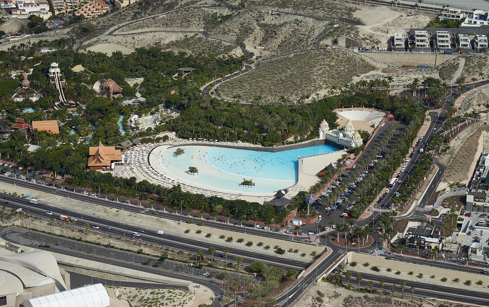
03
Tenerife, Spain
A traveler favorite with lush Thai theming, warm water year-round, and the Tower of Power — a near-vertical drop through an aquarium.
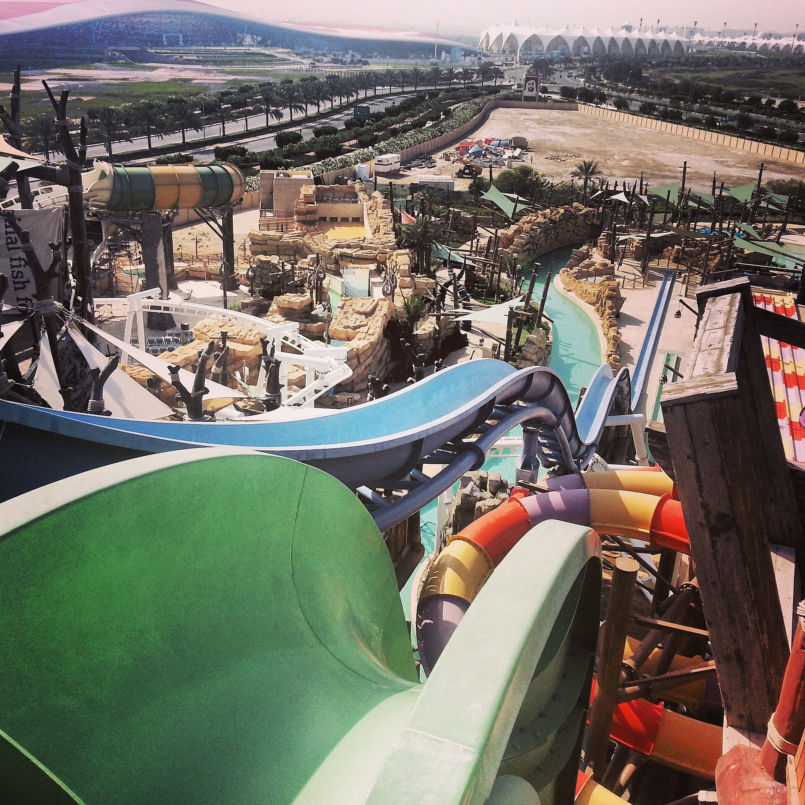
04
Abu Dhabi, UAE
Story-driven pearl-diving adventure with Dawwama, the giant tornado slide, and Bandit Bomber — a suspended coaster that sprays as you soar.
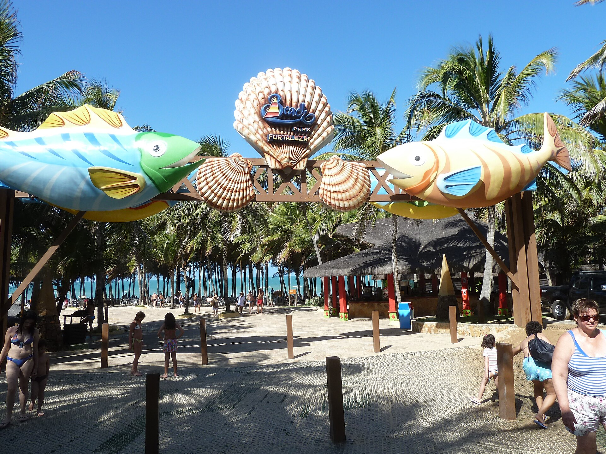
05
Fortaleza, Brazil
Oceanfront spectacle and the towering Insano slide — about 135 feet of freefall with the Atlantic at your side.
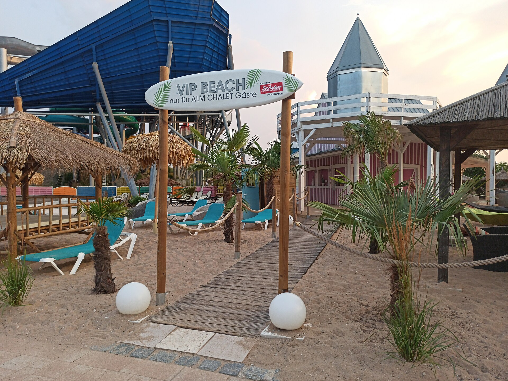
06
Erding, Germany
One of the world’s largest thermal spa and water complexes — slides, lagoons, and tropical indoor beaches under glass.
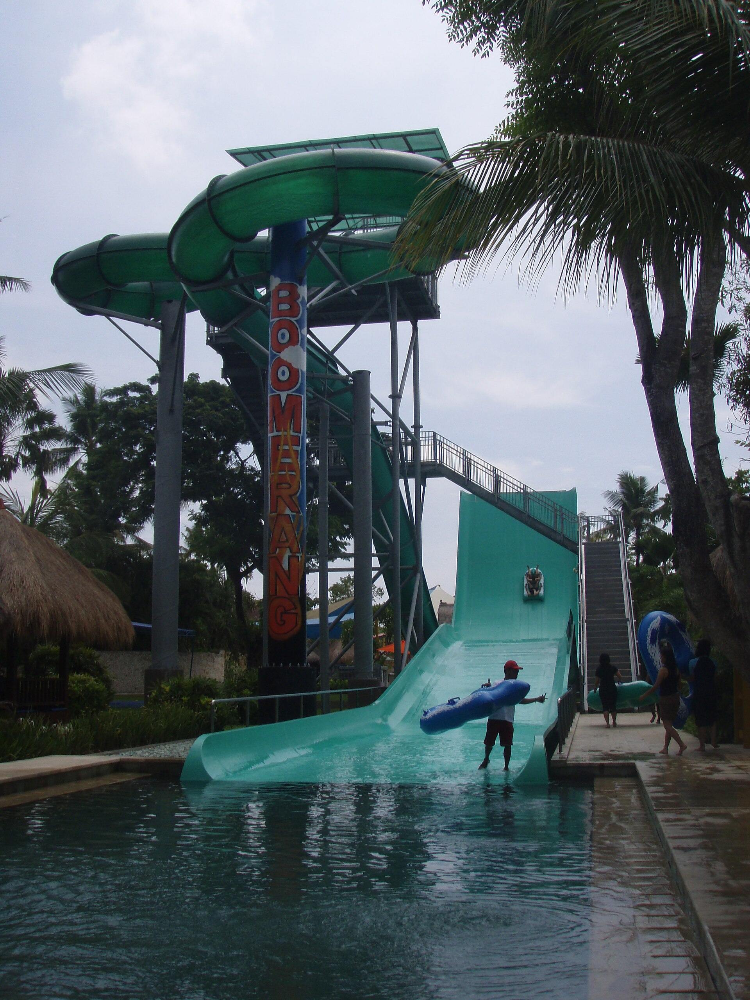
07
Bali, Indonesia
A TripAdvisor Best of the Best favorite — tropical gardens, refined thrills, and that easy island holiday glow.
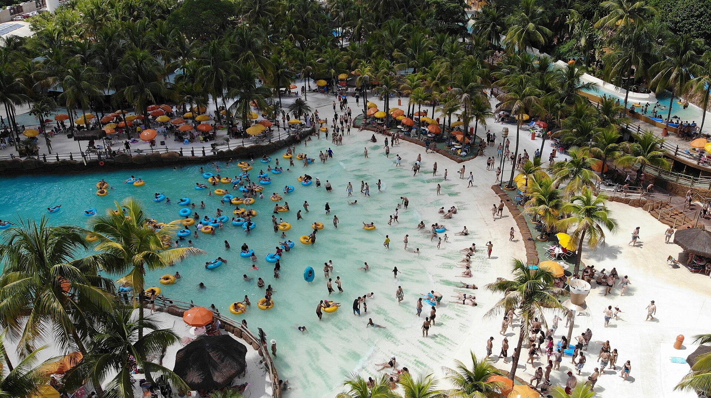
08
Olímpia, Brazil
Naturally warm thermal waters and 50+ attractions — one of the most visited water parks on the planet.
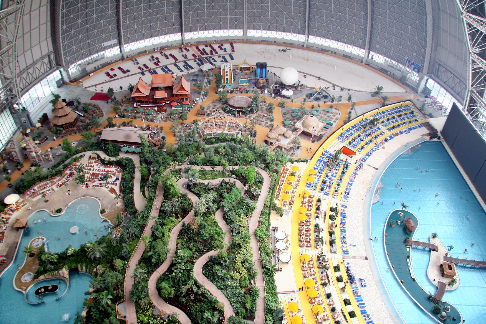
09
Krausnick, Germany
A former airship hangar turned rainforest beach — palms, slides, and saunas while winter waits outside.
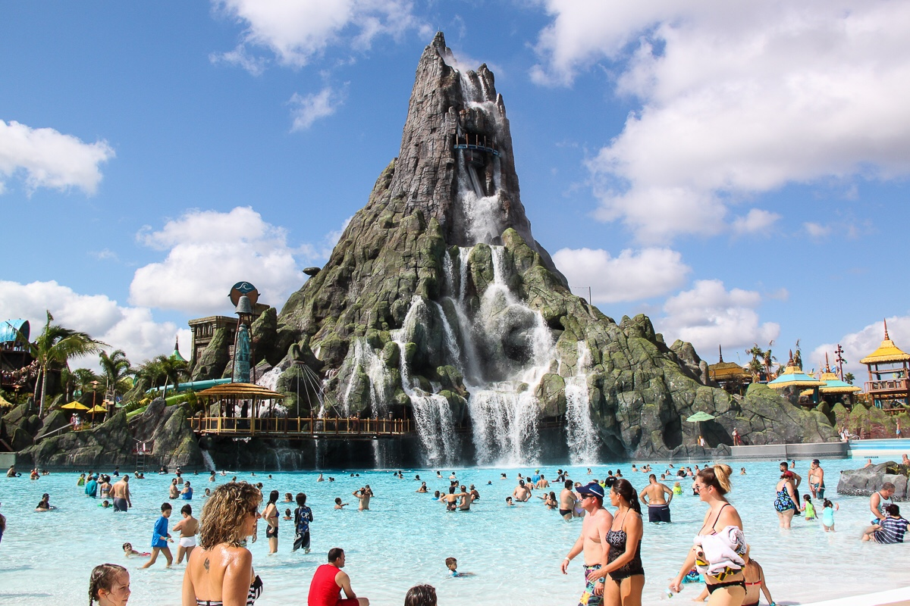
10
Orlando, USA
Immersive Polynesian volcano theming, TapuTapu virtual lines, and the Krakatau Aqua Coaster — a water park that feels like a world.
May every holiday feel this light — a little splash, a little wonder, and bees in the sunshine.